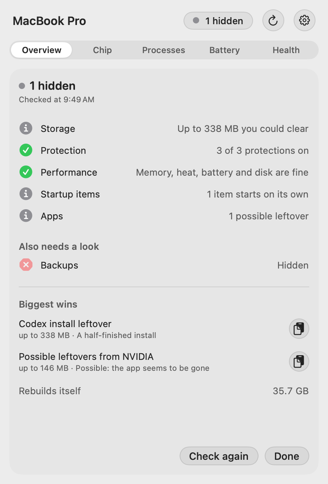

Three ways the scan could look while it runs, drawn from Evan's real Nov 7 scan: six caches that rebuild themselves (35.7 GB) and two folders you could clear (484 MB). Sizes are to scale and the pacing is the app's own (0.35 s per folder, 0.9 s per step). Colour only means a status, as the Vitals contract asks: the folders you could clear are solid and dark, and the caches are quieter grey. Every sketch ends on today's results screen, unchanged apart from a small copy of the graphic under Biggest wins.
One square is 100 MB; a pale square is the part left over. Each folder lays down its squares as it's measured, with a gap before the next; the few dark squares at the end are all you could clear. Ends as a thin band under Biggest wins.
Folders print as line items, each with a thin bar under its name to scale. Caches that rebuild themselves are quieter and add up on their own line; the bottom line is what you could clear. It hands over to the results screen exactly as it is today, with nothing added.
A pen draws one spike per folder, in the order they're measured, each to scale, and a short flat stretch for each step with no folders. Grey spikes are caches that rebuild themselves; the dark, labelled ones you could clear. Ends as a thin strip under Biggest wins.
For comparison: the real Smart Check result from the Nov 7 audit. The last frame of each sketch is drawn from this.

Start, mid-scan, a step with no folders, the end of the scan, and the results screen, in light and dark.